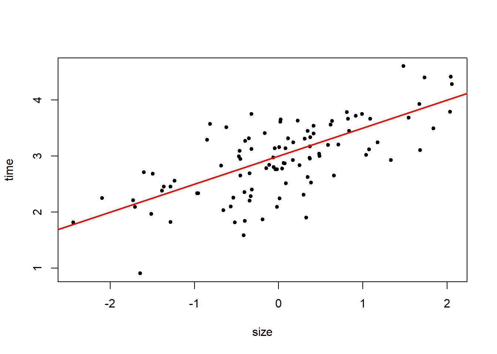
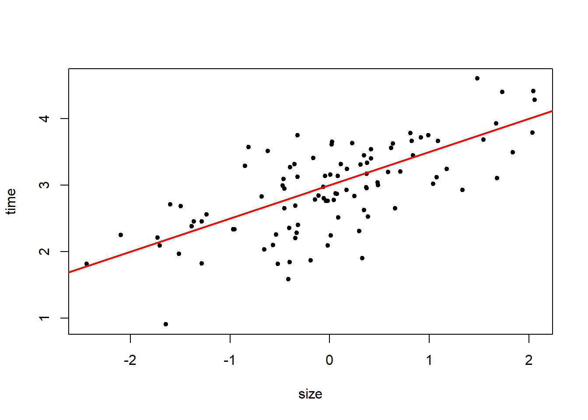
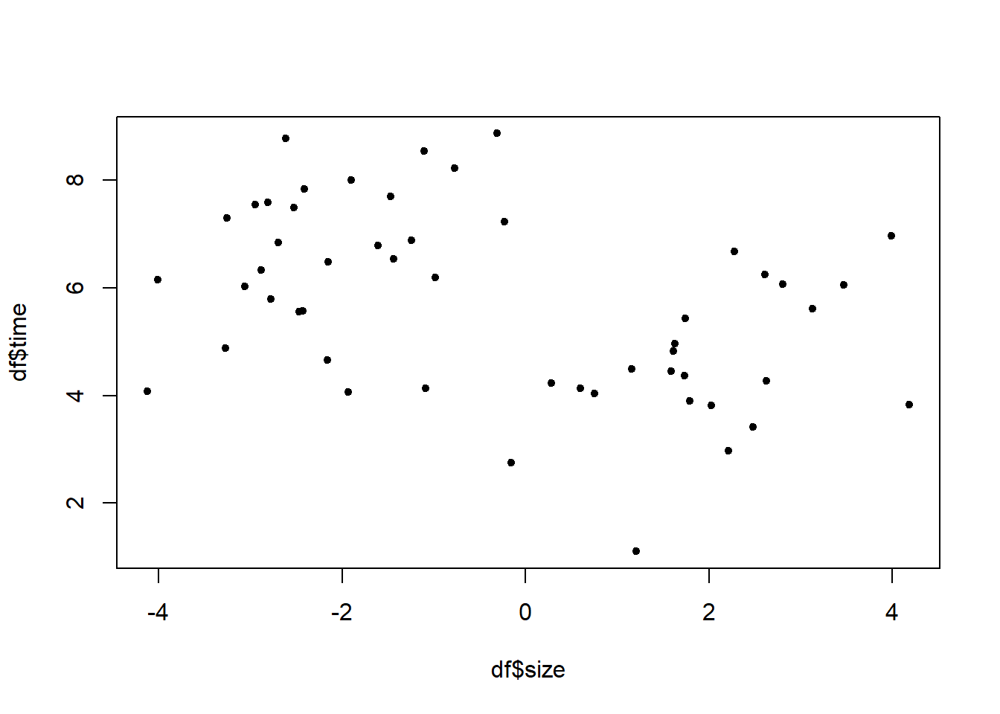
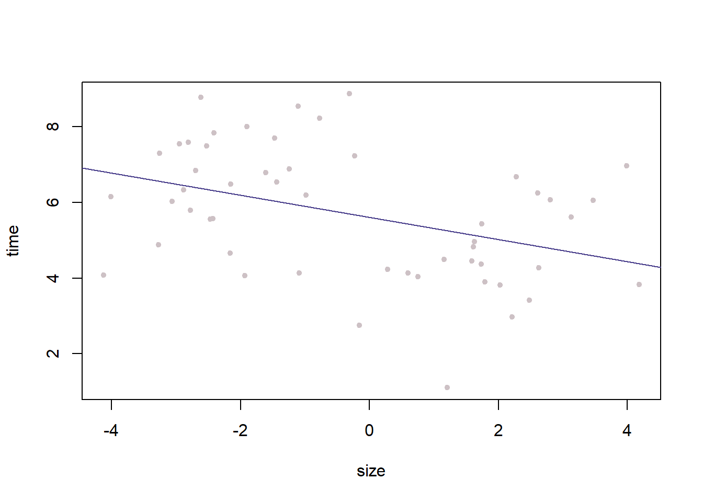
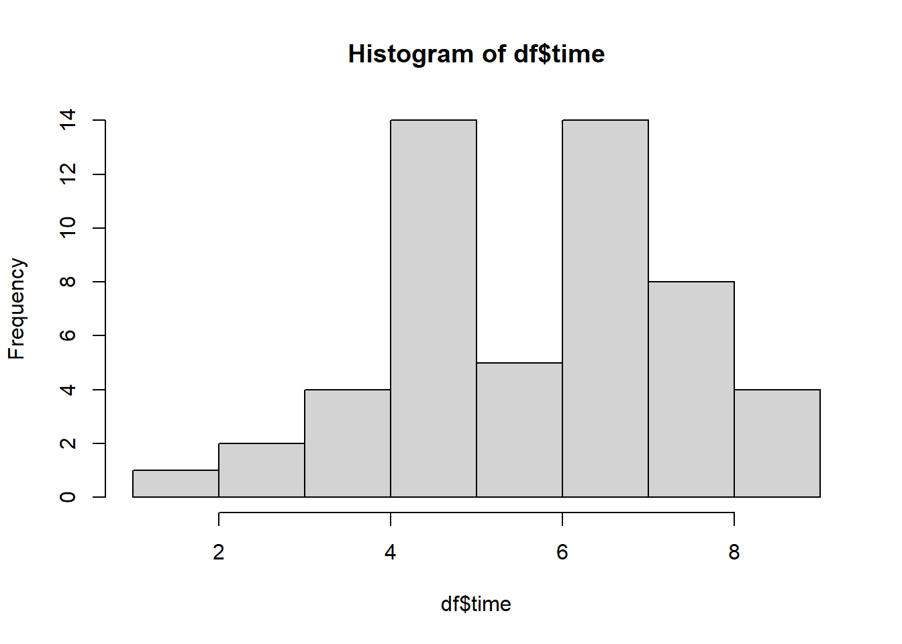
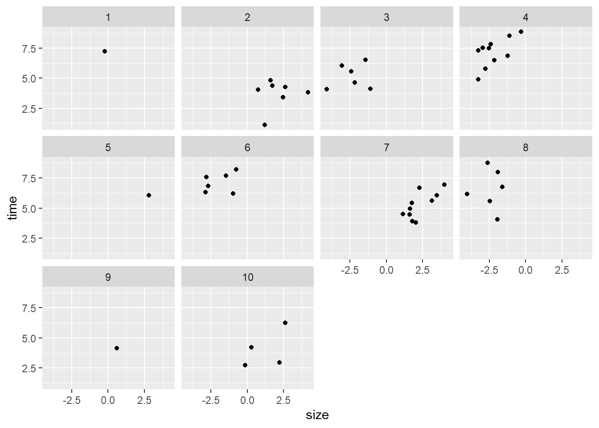
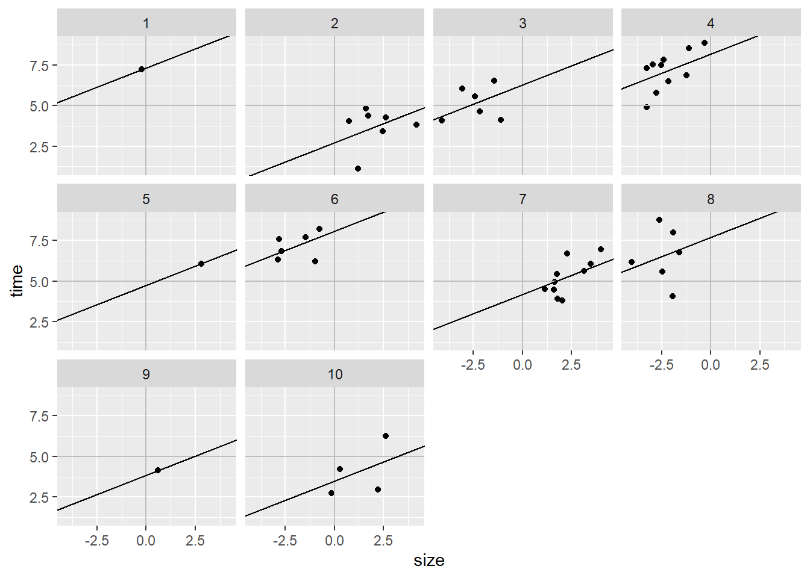
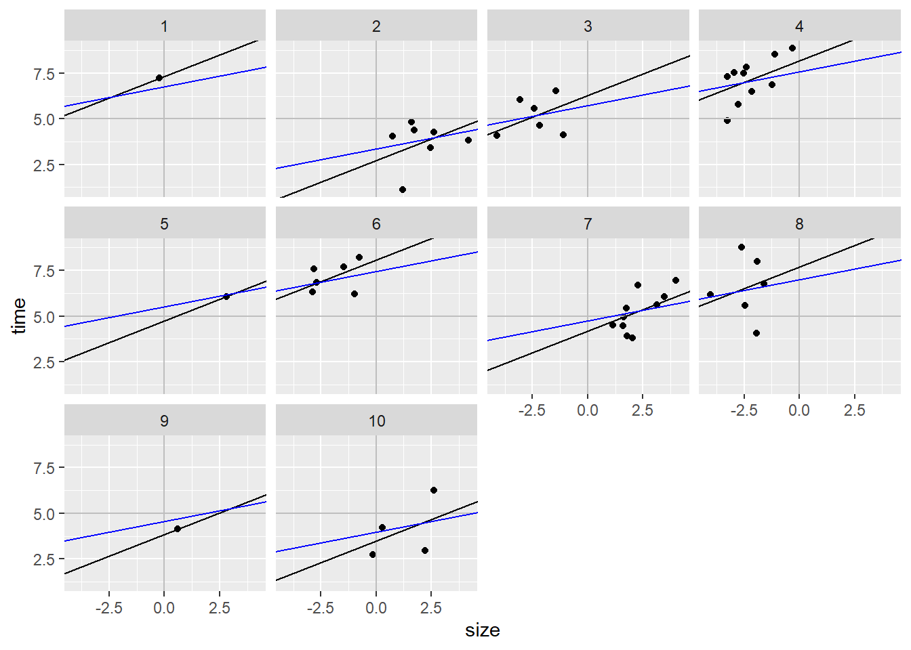

n <- 100
a <- 3
b <- .5
sigma <- .5
size <- rnorm(n)
mu <- a + b*size
time <- rnorm(n, mu, sigma)
plot(time ~ size, pch = 20)
abline(a = 3, b = .5, col = "red", lwd = 2)
There are many, often conflicting, definitions for these terms. For the time being let’s think about multilevel models as a model where the parameters, at one level of the model, are themselves modeled in another level.
Just a reminder, of our boring single level model:
\[ \begin{align*} y_i &\sim Normal(\mu_i, \sigma)\\ \mu_i &= \alpha + \beta x_i \end{align*} \]
Where \(\alpha\) is the intercept. We can interpret this as the value of \(\mu\) when \(x=0\). Since this is often nonsense, biologically, we can center the predictor by subtracting the mean, this will allow us to interpret the intercept as the expected value of \(y\) at the mean of the predictor.
\(\beta\) then is the slope, i.e. for a one unit increase in \(x\) there is a \(\beta\) increase in \(y\).
In the multilevel model, \(\alpha\) and/or \(\beta\) are now going to be modeled at a second level in the model. In the case where we model the intercept (i.e. a varying intercepts model), we would have something like this:
\[ \begin{align*} y_{i} &\sim Normal(\mu_i, \sigma)\\ \mu_i &= \alpha_{j[i]} + \beta x_i\\ \alpha_j &\sim Normal(\overline{\alpha}, \sigma_{\alpha}) \end{align*} \]
Let’s begin, as usual, with Allie working her way up a stream in search of Anolis aquaticus.
As Allie bravely works upstream, she is thinking about her past research on this stream and thinks fondly of her past modeling experiences. She knows that anoles on this stream will dive to escape predators and will spend a certain amount of time underwater that follows the following model:
\[ \begin{align*} time_i &\sim Normal(\mu_i, .5)\\ \mu_i &= 3 + .5\times size_i \end{align*} \]
Let’s simulate from and plot this model.
n <- 100
a <- 3
b <- .5
sigma <- .5
size <- rnorm(n)
mu <- a + b*size
time <- rnorm(n, mu, sigma)
plot(time ~ size, pch = 20)
abline(a = 3, b = .5, col = "red", lwd = 2)
Allie is interested if these findings are unique to this stream, or if it can be generalized to the entire population of anoles. So she collects data from 10 different streams and measures how long each anole stays submerged. Let’s read in the data and check it out. Let’s do a quick little plot to see if diving looks correlated with size. (n.b. size is scaled to have a mean of 0 and a standard deviation of 1)
library(here)here() starts at C:/Users/jjk06/OneDrive/Desktop/Fall_2024library(lme4)Loading required package: Matrixlibrary(arm)Loading required package: MASS
arm (Version 1.14-4, built: 2024-4-1)Working directory is C:/Users/jjk06/OneDrive/Desktop/Fall_2024/scripts/week_10df <- read.csv(here("data/week_10/anoles.csv"))
df time size stream
1 7.229963 -0.2279644 1
2 4.373232 1.7368367 2
3 3.418022 2.4811105 2
4 3.833560 4.1828002 2
5 4.268472 2.6224930 2
6 4.826732 1.6155960 2
7 1.104246 1.2038074 2
8 4.035799 0.7545001 2
9 6.027848 -3.0575987 3
10 5.566972 -2.4251657 3
11 4.126330 -1.0932539 3
12 4.656094 -2.1614348 3
13 6.539130 -1.4403478 3
14 4.081974 -4.1239566 3
15 5.795197 -2.7775591 4
16 8.537208 -1.1057022 4
17 6.874668 -1.2424904 4
18 7.537184 -2.9504775 4
19 7.493881 -2.5275481 4
20 7.296211 -3.2526583 4
21 8.864429 -0.3142728 4
22 7.839176 -2.4111244 4
23 4.882512 -3.2717415 4
24 6.473902 -2.1481489 4
25 6.071518 2.8012365 5
26 6.192126 -0.9867592 6
27 7.580954 -2.8083875 6
28 8.214368 -0.7717230 6
29 7.699257 -1.4689566 6
30 6.845821 -2.6960079 6
31 6.330187 -2.8845041 6
32 6.960662 3.9877933 7
33 6.674431 2.2785727 7
34 3.896639 1.7872477 7
35 3.810513 2.0295371 7
36 4.496431 1.1542154 7
37 5.435885 1.7449216 7
38 4.957002 1.6299862 7
39 4.451565 1.5864796 7
40 5.608672 3.1309392 7
41 6.047337 3.4659003 7
42 6.779113 -1.6051009 8
43 6.153498 -4.0135054 8
44 8.769552 -2.6108534 8
45 5.559774 -2.4663349 8
46 7.995525 -1.9004445 8
47 4.058093 -1.9327441 8
48 4.128543 0.5999512 9
49 6.244645 2.6069285 10
50 2.971063 2.2137633 10
51 4.232105 0.2828149 10
52 2.744944 -0.1548230 10plot(df$time ~ df$size, pch = 20)
As the name suggests, we will completely pool the data together, just like we have been doing so far. Here’s the model:
\[ \begin{align*} time_i &\sim Normal(\mu_i, \sigma)\\ \mu_i &= \alpha + \beta size_i \end{align*} \]
Let’s fit it.
mod_pool <- lm(time ~ 1 + size, data = df)
display(mod_pool)lm(formula = time ~ 1 + size, data = df)
coef.est coef.se
(Intercept) 5.61 0.22
size -0.29 0.10
---
n = 52, k = 2
residual sd = 1.59, R-Squared = 0.16summary(mod_pool)
Call:
lm(formula = time ~ 1 + size, data = df)
Residuals:
Min 1Q Median 3Q Max
-4.1522 -1.1929 -0.1483 1.1839 3.1640
Coefficients:
Estimate Std. Error t value Pr(>|t|)
(Intercept) 5.60847 0.22256 25.200 < 2e-16 ***
size -0.29246 0.09562 -3.059 0.00357 **
---
Signif. codes: 0 '***' 0.001 '**' 0.01 '*' 0.05 '.' 0.1 ' ' 1
Residual standard error: 1.589 on 50 degrees of freedom
Multiple R-squared: 0.1576, Adjusted R-squared: 0.1408
F-statistic: 9.355 on 1 and 50 DF, p-value: 0.003568plot(time ~ size, data = df, col = "lavenderblush3", pch = 20)
abline(a = coef(mod_pool)[1], b = coef(mod_pool)[2], col = "darkslateblue")
hist(df$time)
So the complete pooling robot doesn’t have any strong beliefs about the effect of size on diving time. It is fairly confident that smaller lizards dive longer. Does she need to update her thinking on size and predator avoidance? Was the original research an artifact of sampling? Maybe there is an effect of stream and she just happened to sample an outlier stream?
Let’s try adding stream as a predictor.
In this case, we will add stream directly into the model, so there will be a separate intercept for each stream. Importantly, there is no information shared between streams in the model:
\[ \begin{align*} time_i &\sim Normal(\mu_i, \sigma)\\ \mu_i &= \alpha_{stream[i]} + \beta size_i \end{align*} \]
df$stream <- factor(df$stream)
display(mod_no_pool <- lm(time ~ -1 + stream + size, data = df))lm(formula = time ~ -1 + stream + size, data = df)
coef.est coef.se
stream1 7.34 1.15
stream2 2.71 0.56
stream3 6.29 0.62
stream4 8.20 0.52
stream5 4.75 1.24
stream6 8.06 0.57
stream7 4.16 0.53
stream8 7.70 0.63
stream9 3.85 1.15
stream10 3.46 0.61
size 0.47 0.17
---
n = 52, k = 11
residual sd = 1.15, R-Squared = 0.97The no pooling robot seems fairly confident that there is a positive relationship between size and diving. Maybe Allie’s research was correct on the first stream?
Let’s try the partial pooling approach.
Like the name suggests, this approach (the multilevel approach), allows us to have separate groups, but they share information. We do this by forcing the intercepts to come from a common distribution. Here’s the model:
\[ \begin{align*} time_i &\sim Normal(\mu_i, \sigma)\\ \mu_i &= \alpha_{stream[i]} + \beta size_i\\ \alpha_{stream[i]} &\sim Normal(\overline{\alpha}, \sigma_{\alpha}) \end{align*} \]
Let’s look at this model.
mod_p_pool <- lmer(time ~ 1 + size + (1|stream), data = df)
display(mod_p_pool)lmer(formula = time ~ 1 + size + (1 | stream), data = df)
coef.est coef.se
(Intercept) 5.66 0.57
size 0.23 0.15
Error terms:
Groups Name Std.Dev.
stream (Intercept) 1.65
Residual 1.16
---
number of obs: 52, groups: stream, 10
AIC = 192.6, DIC = 181.8
deviance = 183.2 fixef(mod_p_pool)(Intercept) size
5.6626895 0.2339056 ranef(mod_p_pool)$stream
(Intercept)
1 1.08193367
2 -2.29306691
3 0.05655237
4 1.91598866
5 -0.16449758
6 1.78577031
7 -0.91635485
8 1.34472196
9 -1.11790697
10 -1.69314066
with conditional variances for "stream" Now we’ve gone to the robot being unsure about what is going on. Let’s do some plotting to think through it.
library(tidyverse)── Attaching core tidyverse packages ──────────────────────── tidyverse 2.0.0 ──
✔ dplyr 1.1.4 ✔ readr 2.1.5
✔ forcats 1.0.0 ✔ stringr 1.5.1
✔ ggplot2 3.5.1 ✔ tibble 3.2.1
✔ lubridate 1.9.3 ✔ tidyr 1.3.1
✔ purrr 1.0.2
── Conflicts ────────────────────────────────────────── tidyverse_conflicts() ──
✖ tidyr::expand() masks Matrix::expand()
✖ dplyr::filter() masks stats::filter()
✖ dplyr::lag() masks stats::lag()
✖ tidyr::pack() masks Matrix::pack()
✖ dplyr::select() masks MASS::select()
✖ tidyr::unpack() masks Matrix::unpack()
ℹ Use the conflicted package (<http://conflicted.r-lib.org/>) to force all conflicts to become errorsbase <- df %>%
ggplot(aes(x = size, y = time)) +
geom_point() +
facet_wrap(stream ~ .)
base
Let’s add some lines that represent our no-pooling and partial-pooling models. We will also add a vertical line at 0 for the mean size and a horizontal line for the mean of the stream distribution (since you know the malevolent god in charge of this data, you know that the true mean of the streams is 5!)
base <- base +
geom_hline(yintercept = 5, color = "grey") +
geom_vline(xintercept = 0, color = "grey")
baseWell, there are 3 streams where Allie was only able to sample 1 anole, What do we think about that?
We need to extract the intercepts and slopes for each model, and put them in a data frame with streams to add them to ggplot.
fit_no_pool <- data.frame(stream = factor(1:10), b = coef(mod_no_pool)[11], a = coef(mod_no_pool)[1:10])
fit_p_pool <- data.frame(stream = factor(1:10), b = fixef(mod_p_pool)[2], fixef(mod_p_pool)[1] + ranef(mod_p_pool)$stream)
colnames(fit_p_pool) <- c("stream", "b", "a")
base <- base +
geom_abline(data = fit_no_pool, aes(slope = b, intercept = a))
base
This looks pretty good! Actually, it looks almost too good. Check out the three streams that have only one data point. The model has fit those points exactly. If you aren’t paranoid already, this should spark any latent paranoia lurking in your mind.
Let’s add the mean fit of the partially pooled model to see what’s going on.
base +
geom_abline(data = fit_p_pool, aes(slope = b, intercept = a), col = "blue")
So what is going on here?
![]()
If you look at the intercepts of the blue lines (where the blue line crosses the 0 vertical line) they are shrunk toward the true population mean. This means that they are less likely to over fit the data. In the no-pooling model, the streams with more points dominate the calculation of the slope. For the streams with only one point, there is no information about the slope, so they meekly accept the slope calculated for the better observed streams, this means that the intercept is then fit so that the regression line goes through the single point. This causes massive over fitting.
In the case of the partially pooled model, the streams come from a distribution with mean \(\overline{\alpha}\) and a standard deviation of \(\sigma_{\alpha}\). This does two things. First, the intercept of each stream is now a compromise between the data point of that stream and the distribution of streams. The model will penalize stream values that are two far away from the population mean (of streams). Second, we can now use the information in those individual points to estimate the slope. They will still carry less weight than the better observed streams, but we are not throwing away that information. All of this gives us a more conservative model. To get more resolution, Allie will need to do more sampling.
Allie has also learned that there is considerable variability in behavior between streams. She can start thinking about what would cause this variation. Importantly, the multilevel model let’s her make inferences about the differences between streams where single level models cannot!!
Let’s try to simulate from these things to get a better understanding!